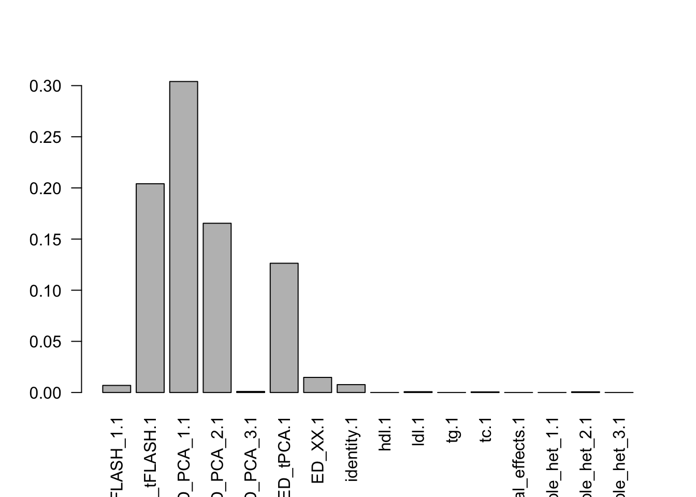
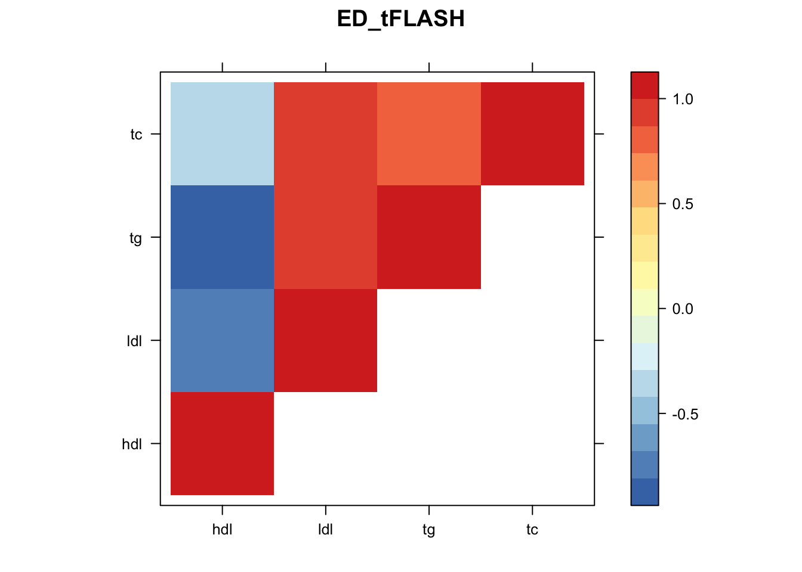
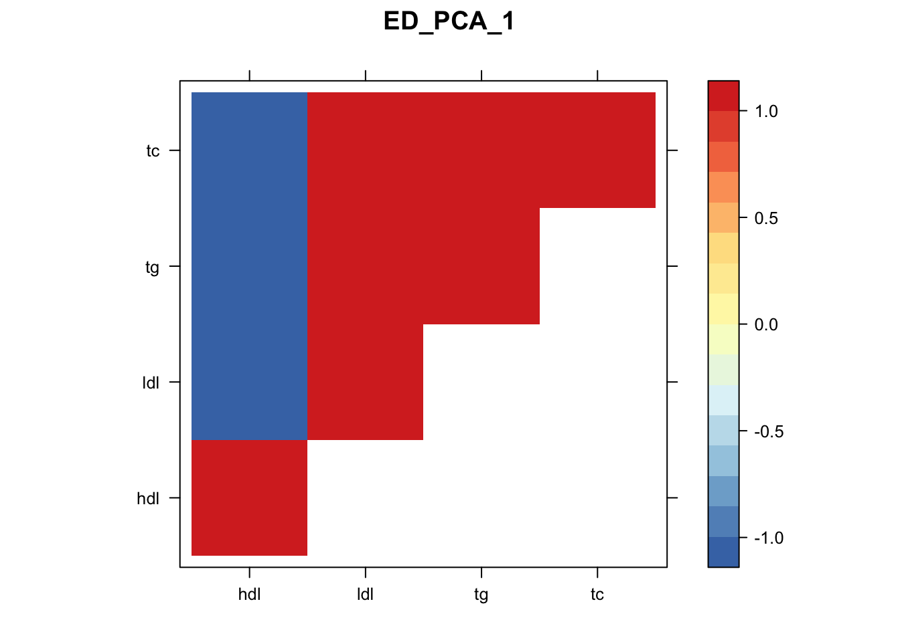
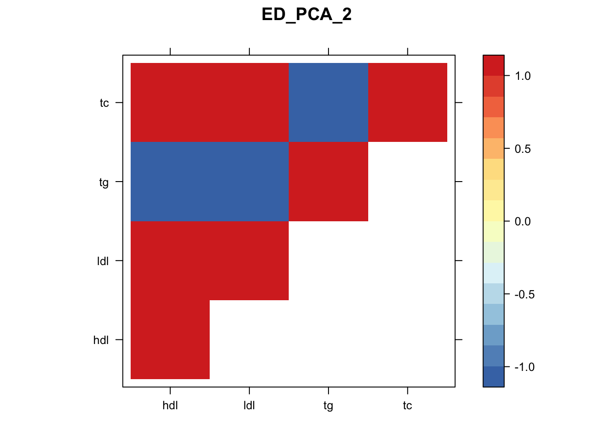
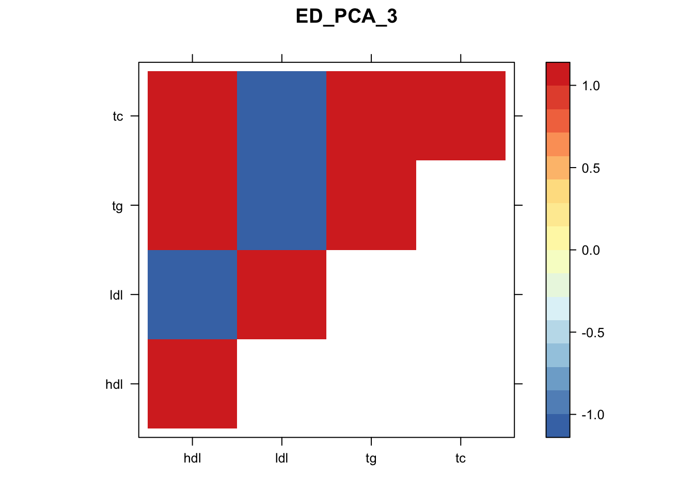
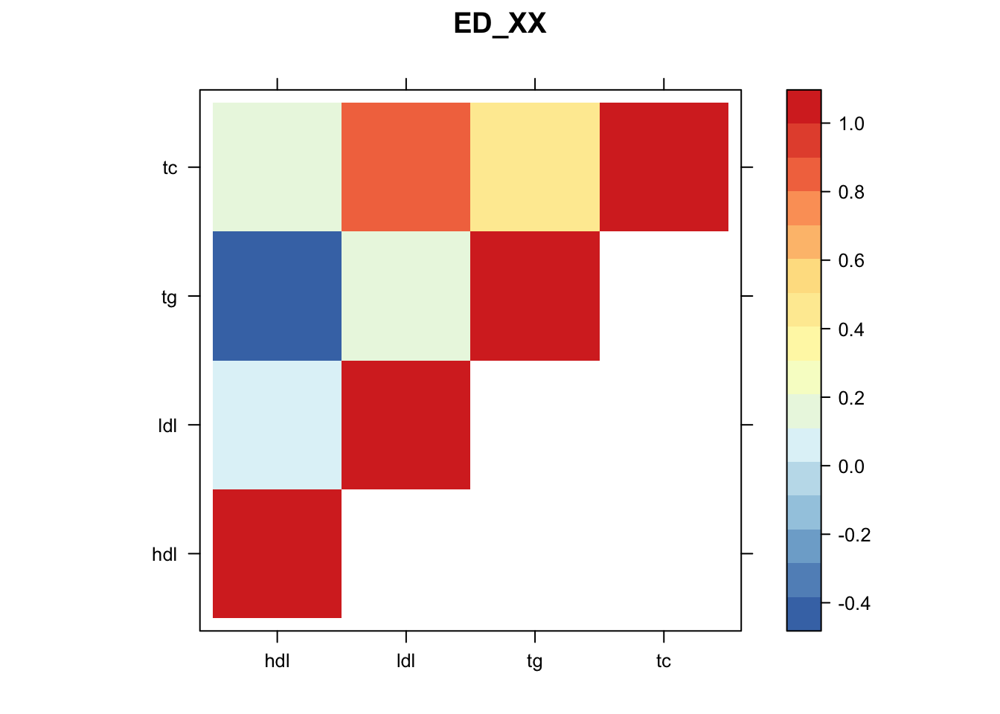
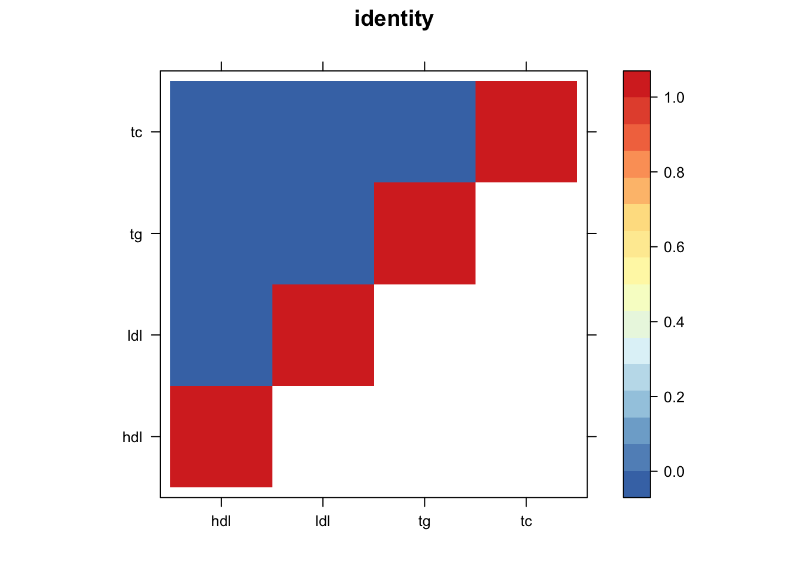
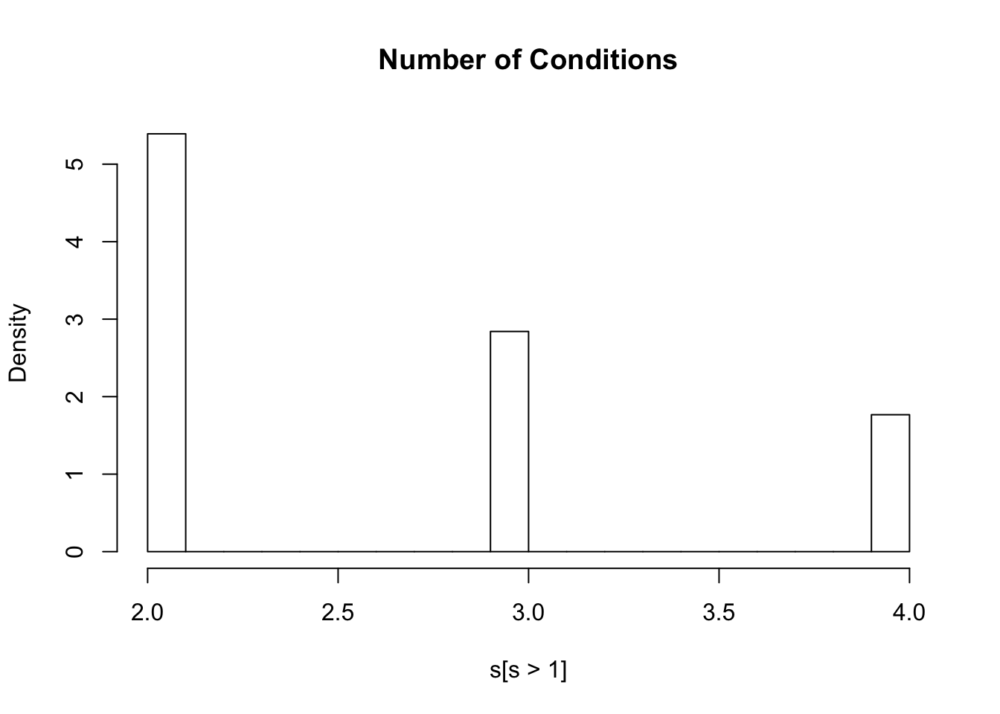

Last updated: 2019-12-17
Checks: 5 2
Knit directory: newlipids/
This reproducible R Markdown analysis was created with workflowr (version 1.4.0). The Checks tab describes the reproducibility checks that were applied when the results were created. The Past versions tab lists the development history.
The R Markdown file has unstaged changes. To know which version of the R Markdown file created these results, you’ll want to first commit it to the Git repo. If you’re still working on the analysis, you can ignore this warning. When you’re finished, you can run wflow_publish to commit the R Markdown file and build the HTML.
Great job! The global environment was empty. Objects defined in the global environment can affect the analysis in your R Markdown file in unknown ways. For reproduciblity it’s best to always run the code in an empty environment.
The command set.seed(20190925) was run prior to running the code in the R Markdown file. Setting a seed ensures that any results that rely on randomness, e.g. subsampling or permutations, are reproducible.
Great job! Recording the operating system, R version, and package versions is critical for reproducibility.
To ensure reproducibility of the results, delete the cache directory workingwithdata_cache and re-run the analysis. To have workflowr automatically delete the cache directory prior to building the file, set delete_cache = TRUE when running wflow_build() or wflow_publish().
Great job! Using relative paths to the files within your workflowr project makes it easier to run your code on other machines.
Great! You are using Git for version control. Tracking code development and connecting the code version to the results is critical for reproducibility. The version displayed above was the version of the Git repository at the time these results were generated.
Note that you need to be careful to ensure that all relevant files for the analysis have been committed to Git prior to generating the results (you can use wflow_publish or wflow_git_commit). workflowr only checks the R Markdown file, but you know if there are other scripts or data files that it depends on. Below is the status of the Git repository when the results were generated:
Ignored files:
Ignored: .DS_Store
Ignored: analysis/.DS_Store
Ignored: analysis/.Rhistory
Ignored: analysis/looking_at_significance_cache/
Ignored: analysis/workingwithdata_cache/
Ignored: data/.DS_Store
Ignored: data/Archive.zip.gz
Ignored: data/Basic_mvp_sarah_HDL.tsv
Ignored: data/Basic_mvp_sarah_LDL.tsv
Ignored: data/Basic_mvp_sarah_LDL.tsv.zip
Ignored: data/Basic_mvp_sarah_TC.tsv
Ignored: data/Basic_mvp_sarah_TG.tsv
Ignored: data/EDcov.Rds
Ignored: data/EDcov_sim.Rds
Ignored: data/ash.rds
Ignored: data/ash_lf.txt
Ignored: data/ash_sim.rds
Ignored: data/gtexcolors.txt
Ignored: data/hdl_max.txt
Ignored: data/ldl_max.txt
Ignored: data/mashcomplete.rds
Ignored: data/mashcomplete.rds.zip
Ignored: data/mashresult_mvp.rds
Ignored: data/mashresult_sim.rds
Ignored: data/max_ld_block.txt
Ignored: data/merged_betas.txt
Ignored: data/merged_betas_mvp.txt
Ignored: data/merged_betas_mvp_simple.txt
Ignored: data/merged_p.txt
Ignored: data/merged_p_mvp_simple.txt
Ignored: data/merged_se.txt
Ignored: data/merged_se_mvp_simple.txt
Ignored: data/merged_z.txt
Ignored: data/merged_z_mvp.txt
Ignored: data/merged_z_mvp_withnames.txt
Ignored: data/tc_max.txt
Ignored: data/tg_max.txt
Ignored: data/znew.txt
Ignored: docs/.DS_Store
Ignored: docs/figure/.DS_Store
Unstaged changes:
Modified: analysis/simulations.Rmd
Modified: analysis/workingwithdata.Rmd
Note that any generated files, e.g. HTML, png, CSS, etc., are not included in this status report because it is ok for generated content to have uncommitted changes.
These are the previous versions of the R Markdown and HTML files. If you’ve configured a remote Git repository (see ?wflow_git_remote), click on the hyperlinks in the table below to view them.
| File | Version | Author | Date | Message |
|---|---|---|---|---|
| Rmd | 52c52c7 | Sarah Urbut | 2019-11-01 | Update |
| Rmd | 76cc40a | Sarah Urbut | 2019-10-27 | Update |
| html | 76cc40a | Sarah Urbut | 2019-10-27 | Update |
| Rmd | 3f85586 | Sarah Urbut | 2019-10-07 | Update |
| html | 3f85586 | Sarah Urbut | 2019-10-07 | Update |
| Rmd | 079589b | Sarah Urbut | 2019-10-07 | Update |
| html | 079589b | Sarah Urbut | 2019-10-07 | Update |
| Rmd | 7142cc6 | Sarah Urbut | 2019-10-04 | Updated plots |
| html | 7142cc6 | Sarah Urbut | 2019-10-04 | Updated plots |
| Rmd | 73da9ad | Sarah Urbut | 2019-10-03 | Update |
| html | 73da9ad | Sarah Urbut | 2019-10-03 | Update |
| html | ca158bf | Sarah Urbut | 2019-10-03 | Update docs |
Here we will try to merge based on common chr.position (per Hg18) names.
To run mashr, we need a matrix of maxes. The best way to do this is to choose the max effect across conditions per LD block, as described in Pickrell et al. Only then can we assume the maxes used to create covariance matrices are truly linearly independent. We will select SNPS falling within each of the 1700 LD blocks and choose SNP with maximum absolute effect acrtoss conditions.
ztab=read.table("~/lipids_mvp/data/merged_z_mvp_withnames.txt")
bed=read.table("~/Downloads/ld_chunk.bed")
head(bed) V1 V2 V3
1 chr1 10583 1892607
2 chr1 1892607 3582736
3 chr1 3582736 4380811
4 chr1 4380811 5913893
5 chr1 5913893 7247335
6 chr1 7247335 9365199maxes=apply(ztab[,c("beta.x","beta.y","tgbeta","tcbeta")],1,function(x){max(abs(x))})
znew=cbind(ztab,maxes)
colnames(znew)[c(4:7)]=c("hdl","ldl","tg","tc")max_block=data.frame(matrix(ncol = ncol(znew), nrow = nrow(bed)))
colnames(max_block)=colnames(znew)
for(i in 1:nrow(bed)){
chr=bed[i,1]
start=bed[i,2]
stop=bed[i,3]
in_chrom=znew[znew$hg19chrc==chr,]
goodguys=in_chrom[in_chrom$bp>start&in_chrom$bp<stop,]
if(nrow(goodguys)>0) {
z.max=which.max(goodguys[,"maxes"])
z_good=goodguys[z.max,]
} else {
z_good=rep(0,ncol(max_block))
}
z_good=data.table(z_good,stringsAsFactors = T)
z_good$hg19chrc=as.character(z_good$hg19chrc)
z_good$snpid.x=as.character(z_good$snpid.x)
max_block[i,]=z_good
print(i)
}
max_block=na.omit(max_block)
write.table(max_block,"~/lipids_mvp/data/max_ld_block.txt")Now, we’re ready to mash!
ztab=read.table("~/lipids_mvp/data/merged_z_mvp_withnames.txt")
znew=read.table("~/lipids_mvp/data/merged_z_mvp.txt")
colnames(znew)=c("hdl","ldl","tg","tc")
library("mashr")
library("flashr")
max_block=read.table("~/lipids_mvp/data/max_ld_block.txt")
source('~/Dropbox/jointData/flashscript.R')
# identify a random subset of 20000 tests
random.subset = sample(1:nrow(znew),40000)
zmash=as.matrix(znew[,c("hdl","ldl","tg","tc")]);rownames(zmash)=ztab$snpid.x
data.temp = mash_set_data(zmash[random.subset,],alpha = 1)
Vhat = estimate_null_correlation_simple(data.temp)
saveRDS("~/lipids_mvp/data/MVPVhat.rds")
library("lattice")
clrs = colorRampPalette((c("#D73027","#FC8D59","#FEE090","#FFFFBF", "#E0F3F8","#91BFDB","#4575B4")))(64)
print(levelplot(Vhat,col.regions = clrs,xlab = "",ylab = "",colorkey = TRUE,main="VHAT"))
rm(data.temp)
data.random = mash_set_data(zmash[random.subset,],alpha = 1,V=Vhat)
zmax=apply(max_block[,c(4:7)],2,function(x){as.numeric(x)});rownames(zmax)=max_block$snpid.x
data.strong = mash_set_data(zmax,alpha = 1,V=Vhat)
U.pca = cov_pca(data.strong,3)
U.flash=cov_flash(data.strong, non_canonical = TRUE)
X.center = apply(data.strong$Bhat, 2, function(x) x - mean(x))
U.ed = cov_ed(data.strong, c(U.flash, U.pca, list("XX" = t(X.center) %*% X.center / nrow(X.center))))
saveRDS(U.ed,"~/lipids_mvp/data/EDcov.Rds")
U.ed=readRDS("~/lipids_mvp/data/EDcov.Rds")
U.c = cov_canonical(data.random)
m = mash(data.random, Ulist = c(U.ed,U.c),outputlevel = 1)
saveRDS(m,"~/lipids_mvp/data/mfitMVP.rds")Now, let’s plot the patterns of sharing as the correlation matrix of the estimated covariance matrices..
zmash=read.table("~/lipids_mvp/data/merged_z_mvp.txt")
colnames(zmash)=c("hdl","ldl","tg","tc")
m=readRDS("~/lipids_mvp/data/mfitMVP.rds")
k=length(m$fitted_g$Ulist)
l=length(m$fitted_g$grid)
pimat=matrix(m$fitted_g$pi[-1],nrow=l,byrow=T)
colnames(pimat)=names(m$fitted_g$pi)[2:(k+1)]
barplot(colSums(pimat),las=2)
| Version | Author | Date |
|---|---|---|
| 76cc40a | Sarah Urbut | 2019-10-27 |
library("lattice")
for(i in 1:8){
z.num=as.matrix(cov2cor(m$fitted_g$Ulist[[i]]))
colnames(z.num)=row.names(z.num)=colnames(zmash)
clrs = colorRampPalette(rev(c("#D73027","#FC8D59","#FEE090","#FFFFBF", "#E0F3F8","#91BFDB","#4575B4")))(64)
z.num[lower.tri(z.num)] = NA
print(levelplot(z.num,col.regions = clrs,xlab = "",ylab = "",colorkey = TRUE,main=paste0(names(m$fitted_g$Ulist)[[i]])))
}
| Version | Author | Date |
|---|---|---|
| 76cc40a | Sarah Urbut | 2019-10-27 |

| Version | Author | Date |
|---|---|---|
| 76cc40a | Sarah Urbut | 2019-10-27 |

| Version | Author | Date |
|---|---|---|
| 76cc40a | Sarah Urbut | 2019-10-27 |

| Version | Author | Date |
|---|---|---|
| 76cc40a | Sarah Urbut | 2019-10-27 |

| Version | Author | Date |
|---|---|---|
| 76cc40a | Sarah Urbut | 2019-10-27 |

| Version | Author | Date |
|---|---|---|
| 76cc40a | Sarah Urbut | 2019-10-27 |
| Version | Author | Date |
|---|---|---|
| 76cc40a | Sarah Urbut | 2019-10-27 |

| Version | Author | Date |
|---|---|---|
| 76cc40a | Sarah Urbut | 2019-10-27 |
Now we can compute posteriors,
mash.data=mash_set_data(zmash,V = Vhat,alpha = 1)
m$result=mash_compute_posterior_matrices(m, mash.data, algorithm.version = "Rcpp")
saveRDS(m,"~/lipids_mvp/data/mashresult_mvp.rds")Let’s take a look:
m=readRDS("~/lipids_mvp/data/mashresult_mvp.rds")
head(m$result$PosteriorMean) hdl ldl tg tc
rs6678176 1.0629093 0.07148775 -0.8411636 0.04103405
rs76909621 0.3901428 -0.18927773 -0.4152670 -0.21156310
rs78642210 0.1458664 0.07404952 -0.1182961 0.05731219
rs77140576 0.3656539 -0.18871989 -0.3827297 -0.20549333
rs113470118 -0.1377051 -0.07017948 0.1158224 -0.05287451
rs75635821 0.3603703 -0.18449444 -0.3773584 -0.20126912head(m$result$lfsr) hdl ldl tg tc
rs6678176 0.1123920 0.4741408 0.1205983 0.5169807
rs76909621 0.2961115 0.4053798 0.3025860 0.4295731
rs78642210 0.4989478 0.5404176 0.4937694 0.5447642
rs77140576 0.3110436 0.4119177 0.3205846 0.4379812
rs113470118 0.5039852 0.5445682 0.4971376 0.5495551
rs75635821 0.3143522 0.4154700 0.3236874 0.4409992lfsr=m$result$lfsr
s=rowSums(lfsr<=0.05)
hist(s[s>1],freq=FALSE,main="Number of Conditions")
| Version | Author | Date |
|---|---|---|
| 76cc40a | Sarah Urbut | 2019-10-27 |
#ash.z=apply(zmash,2,function(x){ashr::ash(x,sebetahat = rep(1,length(x)))})
# ash.pm=matrix(nrow=nrow(zmash),ncol=ncol(zmash))
# ash.lf=matrix(nrow=nrow(zmash),ncol=ncol(zmash))
#
# for(i in 1:ncol(zmash))
#
# {
# x=zmash[,i]
# a=ashr::ash(x,sebetahat = rep(1,length(x)))
# ash.pm[,i]=a$result$PosteriorMean
# ash.lf[,i]=a$result$lfsr
# print(i)
# }
#
#
# colnames(ash.pm)=colnames(ash.lf)=colnames(zmash)
# rownames(ash.pm)=rownames(ash.lf)=rownames(zmash)
#
# write.table(ash.pm,"~/lipids_mvp/data/ash_pm.txt")
# write.table(ash.lf,"~/lipids_mvp/data/ash_lf.txt")
ash.lf=read.table("~/lipids_mvp/data/ash_lf.txt")
ptab=apply(zmash,2,function(x){2*pnorm(-abs(x))})
#write.table(ptab,"~/lipids_mvp/data/merged_p.txt")
sum(ash.lf<0.05)[1] 106052sum(lfsr<0.05)[1] 237730Here 106052 SNPS x Conditions are less than 0.05 using a univariate appropach and 237730 are less than 0.05 with a joint approach, a roughly 250% increase. Furthermore, 102253 SNPS are significant in at least one condition wiht a juint approach, while 72875 with a univariate one.
p=read.table("~/lipids_mvp/data/merged_p.txt")
library(knitr)
library(kableExtra)
dt <- cbind(c(paste("Bonferroni=",sum(p<=5e-8)),paste("univariate_ash=",sum(ash.lf<0.05)),paste("mv_mash=",sum(lfsr<0.05))))
dt <- cbind(c(sum(p<=5e-8),sum(ash.lf<0.05),sum(lfsr<0.05)))
dt=cbind(dt,c(sum(rowSums(p<=5e-8)>0),sum(rowSums(ash.lf<0.05)>0),sum(rowSums(lfsr<0.05)>0)))
rownames(dt)=c("Bonferroni","UnivariateAsh","Mash")
colnames(dt)=c("Overall All Associations","Per Snp, in at least one")
kable(dt)| Overall All Associations | Per Snp, in at least one | |
|---|---|---|
| Bonferroni | 25260 | 16843 |
| UnivariateAsh | 106052 | 72875 |
| Mash | 237730 | 102253 |
dt %>%
kable() %>%
kable_styling()| Overall All Associations | Per Snp, in at least one | |
|---|---|---|
| Bonferroni | 25260 | 16843 |
| UnivariateAsh | 106052 | 72875 |
| Mash | 237730 | 102253 |
sessionInfo()R version 3.5.2 (2018-12-20)
Platform: x86_64-apple-darwin15.6.0 (64-bit)
Running under: macOS Mojave 10.14.6
Matrix products: default
BLAS: /Library/Frameworks/R.framework/Versions/3.5/Resources/lib/libRblas.0.dylib
LAPACK: /Library/Frameworks/R.framework/Versions/3.5/Resources/lib/libRlapack.dylib
locale:
[1] en_US.UTF-8/en_US.UTF-8/en_US.UTF-8/C/en_US.UTF-8/en_US.UTF-8
attached base packages:
[1] stats graphics grDevices utils datasets methods base
other attached packages:
[1] lattice_0.20-38 flashr_0.6-3 mashr_0.2.21.0631 ashr_2.2-37
[5] reshape_0.8.8
loaded via a namespace (and not attached):
[1] Rcpp_1.0.1 pillar_1.4.2 compiler_3.5.2
[4] git2r_0.26.1 plyr_1.8.4 highr_0.8
[7] workflowr_1.4.0 iterators_1.0.10 tools_3.5.2
[10] digest_0.6.20 tibble_2.1.3 gtable_0.3.0
[13] evaluate_0.14 pkgconfig_2.0.2 rlang_0.4.0
[16] Matrix_1.2-17 foreach_1.4.4 rstudioapi_0.10
[19] yaml_2.2.0 parallel_3.5.2 mvtnorm_1.0-11
[22] xfun_0.8 dplyr_0.8.3 stringr_1.4.0
[25] knitr_1.23 fs_1.3.1 tidyselect_0.2.5
[28] rprojroot_1.3-2 grid_3.5.2 glue_1.3.1
[31] R6_2.4.0 rmarkdown_1.14 mixsqp_0.1-97
[34] rmeta_3.0 reshape2_1.4.3 purrr_0.3.2
[37] ggplot2_3.2.0 magrittr_1.5 scales_1.0.0
[40] backports_1.1.4 codetools_0.2-16 htmltools_0.3.6
[43] MASS_7.3-51.4 abind_1.4-5 assertthat_0.2.1
[46] softImpute_1.4 colorspace_1.4-1 stringi_1.4.3
[49] lazyeval_0.2.2 munsell_0.5.0 doParallel_1.0.14
[52] pscl_1.5.2 truncnorm_1.0-8 SQUAREM_2017.10-1
[55] crayon_1.3.4